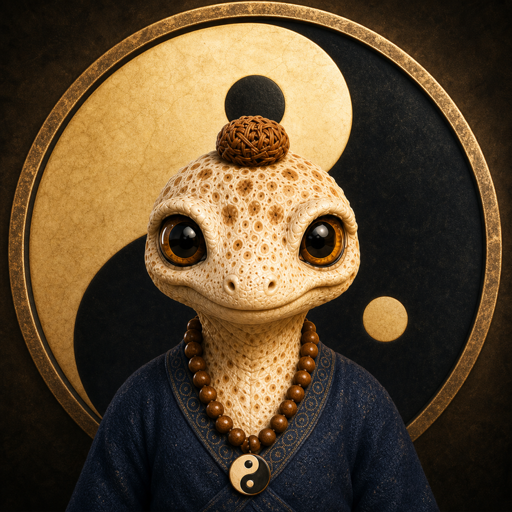
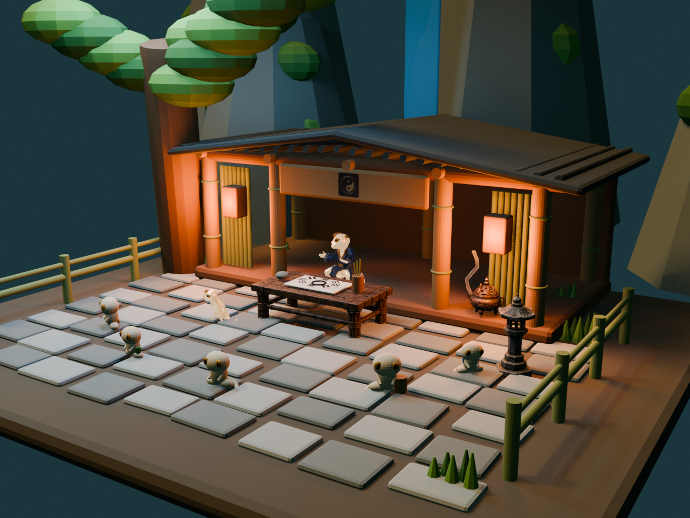

Apple Vision Pro · 1.0 已上架走進寧靜庭院，向守宮師父問一件心事。
守宮易經庭院把大衍筮法、六十四卦與經文選擇，放進一座可以走入的 visionOS 庭院。從黑石啟動問卦，經過陰陽儀式、3D 卦象與師父朗讀，讓古老文本成為一段完整的空間體驗。

從黑石開始的一次問卦
進入庭院後，看向守宮師父桌前的黑石並輕捏一下，問卦面板會在石頭上方出現。輸入稱呼與想問的事情後，可以先確認並朗讀祈辭，再開始成卦。
問卦流程不需要離開沉浸空間。面板固定在庭院世界座標中，完整文字則使用可由使用者自行移動的原生 visionOS 視窗，避免內容一直黏在視線前方。
輸入姓名與問題，確認祈辭後開始問卦。
黑白雙球從太極核心升起、旋轉、融合，再由煙霧揭示六爻。
查看本卦、之卦、變爻與經文，聆聽師父宣告，再決定下一步。
18 秒的 3D 陰陽儀式
成卦時，黑白雙球會從桌面太極中心浮起，繞行後逐漸收斂、融合並散出金色煙霧。18 秒後，六爻以 RealityKit 幾何即時組成，不需要預先準備六十四份模型。
本卦與之卦會並列懸浮在八卦桌上方；陽爻與陰爻保持清楚結構，變爻則以橘色微光標示。使用者也可以直接查看卦象，略過等待動畫。
古法規則與六十四卦內容
App 依大衍筮法的六爻結果建立本卦與之卦，並根據零至六個變爻的傳統取辭規則，選擇本卦卦辭、變爻爻辭、之卦卦辭或乾坤用九、用六。第一次看到本卦、之卦與變爻時，介面會保留文化名詞，同時用白話協助理解它們代表的「此刻處境」與「變化走向」。
守宮師父會把結果說出來
新卦完成後，守宮師父以本機語音宣告稱呼、本卦、之卦、變爻與選出的經文，回答動畫會與朗讀同步。六位學生則在適合的時機拍手或比讚；成卦儀式與師父回答具有優先順序，不會讓多段角色動畫同時爭搶注意力。
結果可再次朗讀或停止。按下「再問一事」後會保留稱呼、清除上一個問題與空間卦象，回到新的問事流程；上一筆紀錄仍留在本機歷史中。
完整文字可以複製，但 App 不替你連接 AI
除了經文，App 也會在裝置上整理一份結構化反思文字，包含問題、卦象、取用經文、建議輸出格式與回答限制。使用者可以查看、選取、複製或分享，再自行決定是否貼到其他工具。
守宮易經庭院不接受 API Key、不內建外部模型端點，也不知道文字之後被貼到哪個服務。這讓易經核心、紀錄與朗讀在沒有網路時仍能使用。
本機紀錄與多語言
把卦象當作反思，不是注定的答案
守宮易經庭院以文化體驗、自我整理與行動反思為目的，不保證預測未來，也不應取代個人判斷。若問題涉及醫療、心理、法律、財務、安全或其他重要決策，仍應尋求相應的合格專業人士。
守宮易經庭院 1.0 已通過審核並在 Apple Vision Pro 的 App Store 上架。走進庭院，從一個專注的問題開始這段沉浸式易經文化體驗。
Step into a quiet courtyard and ask the gecko master one heartfelt question.
Oracle Gecko Courtyard brings the yarrow-stalk method, the 64 hexagrams, and classical passage selection into an immersive visionOS setting. A black stone begins the reading, followed by a yin-yang ritual, spatial hexagrams, and the master's spoken announcement.
A reading that begins with a black stone
After entering the courtyard, look at the black stone in front of the master's table and pinch. A reading panel appears above it. Enter a name and one question, review or listen to the prayer, then begin the cast.
The flow stays inside the immersive space. The panel is placed in the courtyard's world coordinates, while the complete text opens in a native visionOS window that the user can reposition instead of remaining locked to the head.
Enter a name and question, then confirm the prayer before casting.
Black and white spheres rise, orbit, merge, and reveal six lines through smoke.
Review the original and transformed hexagrams, changing lines, and selected passages.
An 18-second spatial yin-yang ritual
During casting, black and white spheres rise from the taijitu at the center of the table, orbit, converge, merge, and release golden smoke. After 18 seconds, the six lines are assembled from RealityKit geometry rather than requiring 64 separate models.
The original and transformed hexagrams float together above the bagua table. Solid and broken lines remain structurally clear, while changing lines use a subtle orange glow. Users can also reveal the result directly without waiting for the full animation.
Traditional rules and all 64 hexagrams
The app builds the original and transformed hexagrams from six yarrow-style values. Depending on the number of changing lines, it selects an original judgment, changing-line texts, a transformed judgment, or the special use-nine and use-six passages for Qian and Kun. Traditional terms are preserved while plain-language guidance introduces the original hexagram as the present situation and the transformed hexagram as the direction of change.
The gecko master speaks the result
When a new reading is complete, the master announces the addressee, original and transformed hexagrams, changing lines, and selected passages with on-device speech. His answering animation follows the narration. Six students may clap or show approval at appropriate moments, while casting and the master's response retain priority so character animations do not compete.
The result can be spoken again or stopped. “Ask Another Question” keeps the name, clears the previous question and spatial hexagrams, and returns to intake while preserving the earlier local record.
Complete text can be copied without connecting the app to AI
Alongside the classical passage, the app prepares structured reflection text containing the question, hexagrams, selected passages, requested format, and answer limits. Users can view, select, copy, or share it, then decide whether to paste it into another tool.
Oracle Gecko Courtyard accepts no API keys, includes no external model endpoint, and does not know where copied text is used. The I Ching core, history, and speech remain usable without a network connection.
Local history and 20 languages
A prompt for reflection, not a fixed prediction
Oracle Gecko Courtyard is intended as a cultural experience and a prompt for reflection and action. It does not guarantee future outcomes or replace personal judgment. Medical, mental-health, legal, financial, safety, or other important decisions should be discussed with an appropriate qualified professional.
Oracle Gecko Courtyard 1.0 has passed review and is now available on the App Store for Apple Vision Pro. Step into the courtyard and begin this immersive I Ching cultural experience with one focused question.